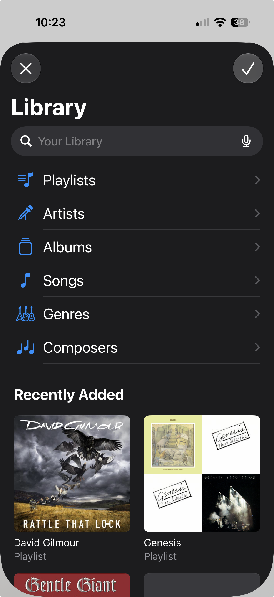

Getting your music in
- Open Files ▸ On My iPhone ▸ IsoBox and copy your Artist folders in. AirDrop, iCloud Drive or a USB drive all work. On a Mac, connect the phone and drag folders onto it in Finder.
- Or use the Import menu in the Library tab: pick files, or import songs by Artist or Album from your Music library (the album cover comes across too).
- To share songs with another phone running IsoBox, use Settings ▸ Send/Receive Music on both.
IsoBox only reads songs you own. Songs that are streaming-only in the Music app can’t be imported.
